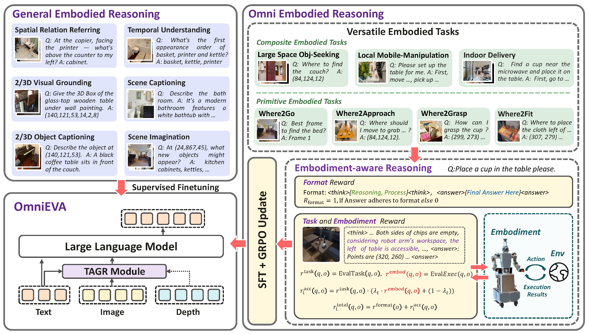
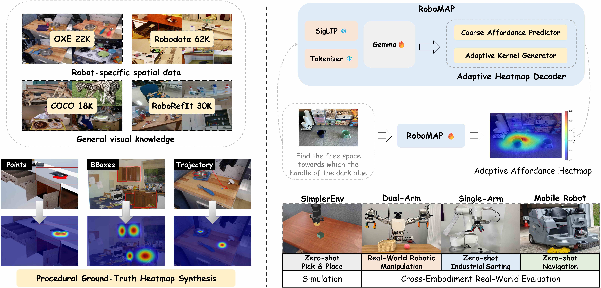
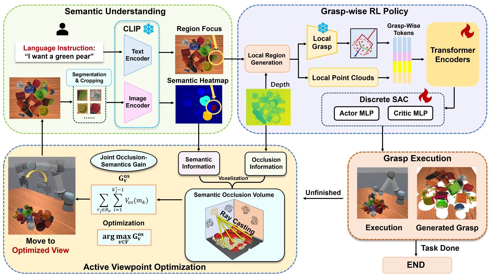
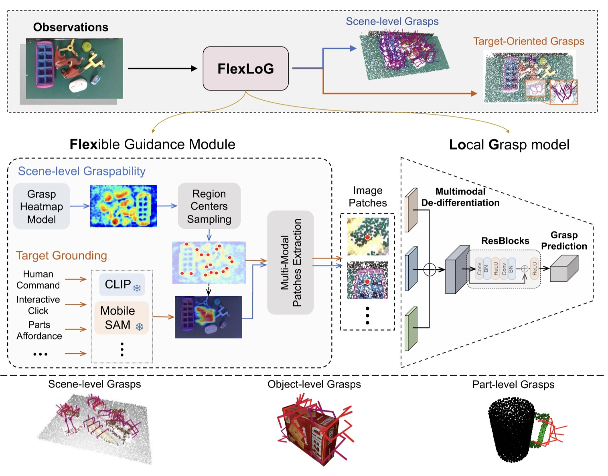
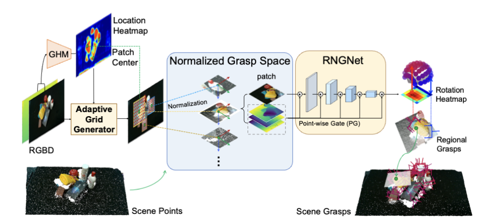
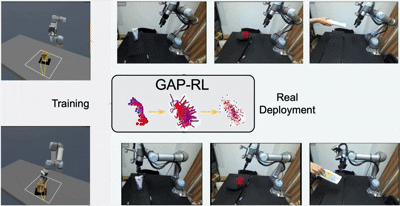
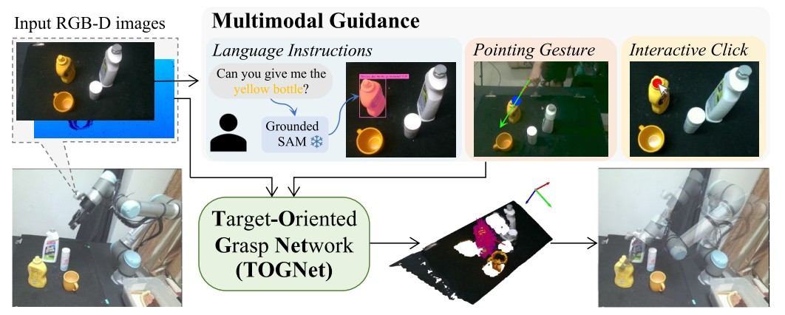
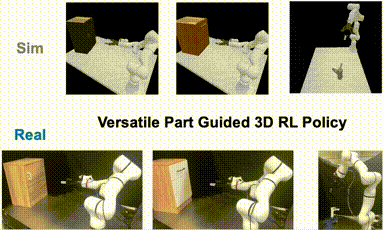
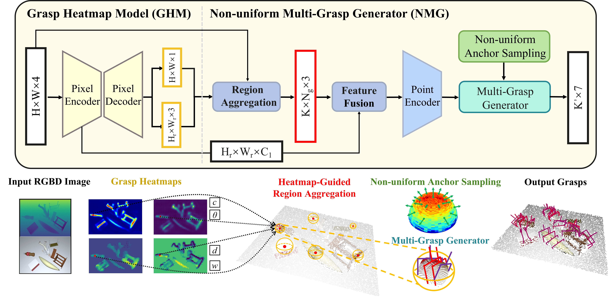
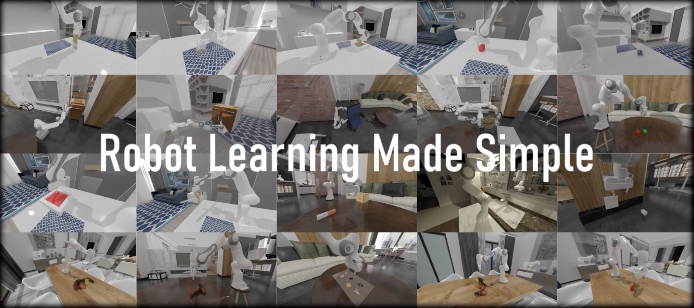

OmniEVA: Embodied Versatile Planner via Task-Adaptive 3D-Grounded and Embodiment-aware Reasoning
International Conference on Learning Representations (ICLR), 2026
I am a researcher in embodied intelligence at AgiBot. Previously, I worked at Huawei Noah's Ark Lab (2025-2026). I received my Ph.D. from Tsinghua University in 2024, conducting research at the Visual Computing Laboratory (VCLab), Department of Electronic Engineering. From 2021 to 2023, I was a visiting scholar at UCSD working with Prof. Hao Su. I received my B.S. from Tsinghua University's Department of Electronic Engineering in 2018.
I'm interested in computer vision, robotic manipulation, reinforcement learning and sim2real. I focus on scalable algorithms to achieve AGI in complex real-world environments.

International Conference on Learning Representations (ICLR), 2026

arXiv, 2025


IEEE/CVF Conference on Computer Vision and Pattern Recognition (CVPR), 2024
project page / arxiv / code



European Conference on Computer Vision Workshops (ECCVW), 2024



International Conference on Learning Representations (ICLR), 2023
project page / arxiv / code